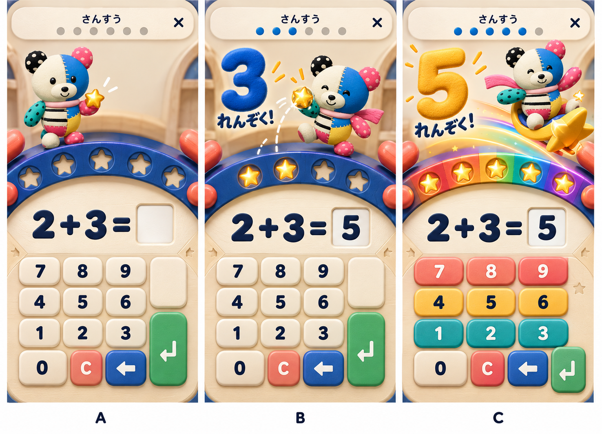
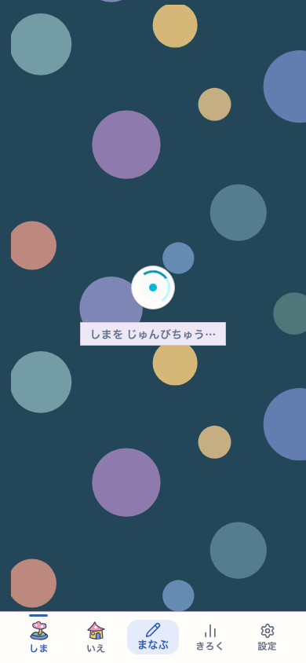
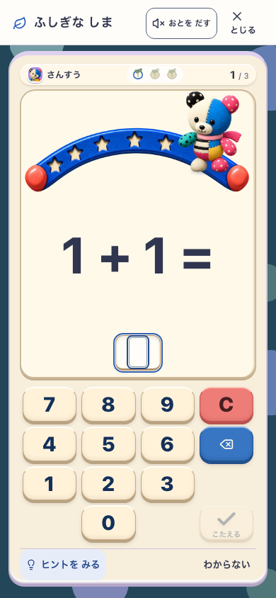
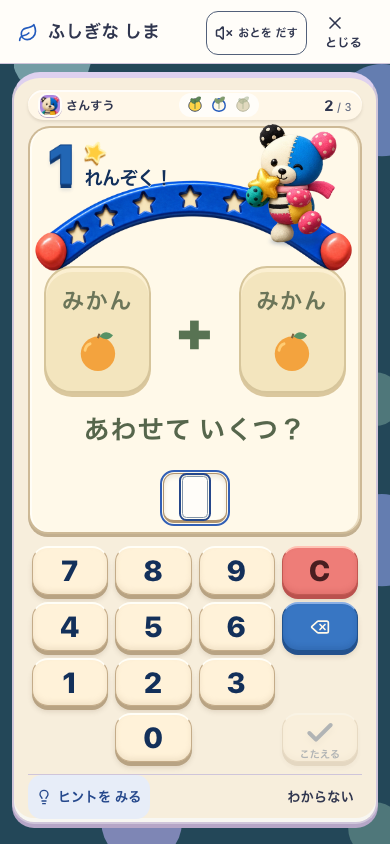
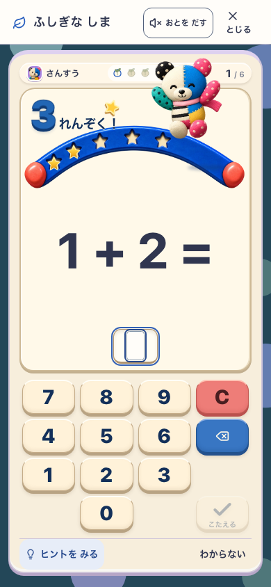
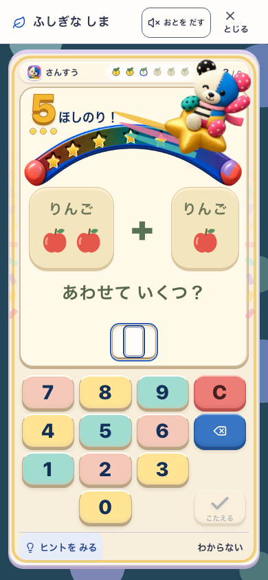
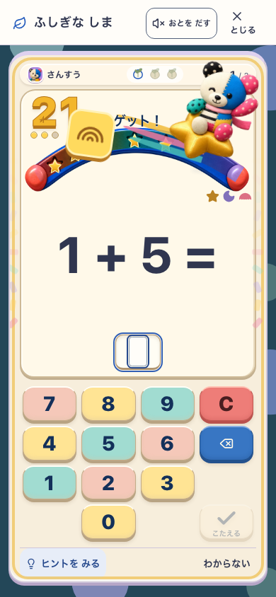
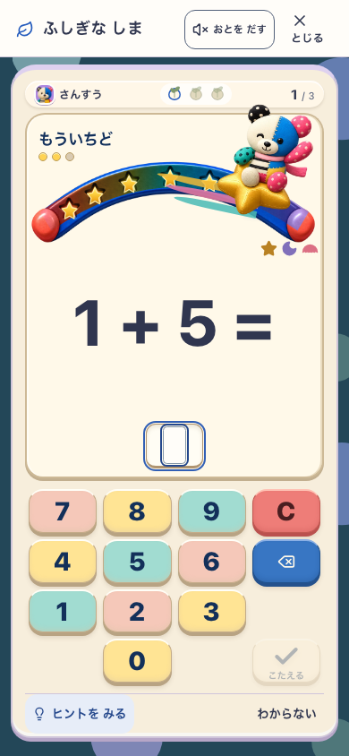
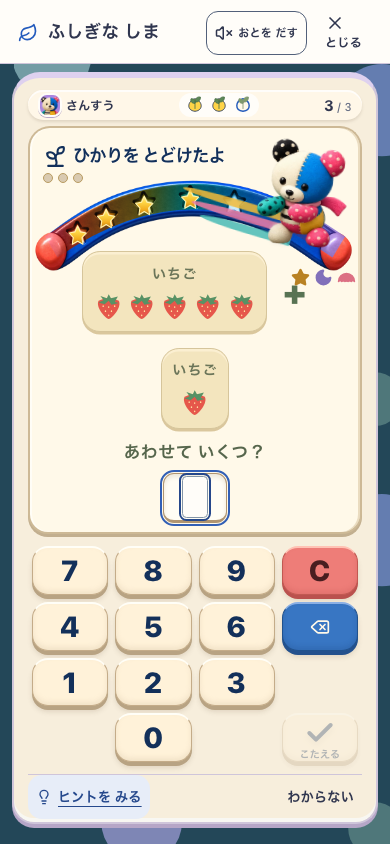
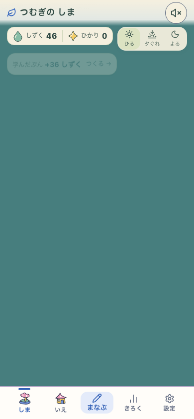

画像先行のv4候補。上は生成した方向案、下は最終productionの実画面。ユーザー採用・子どもの無説明理解は未確認。
127.0.0.1:5357 / 4af6d892-pokomoko-star-arcade-v4 / pokomoko-star-arcade-v4 / Island・Life・Fantasy ON










実画面は使い捨てのプロフィールで実UIから解いた記録。子どもの行動観察や実機の記録ではありません。